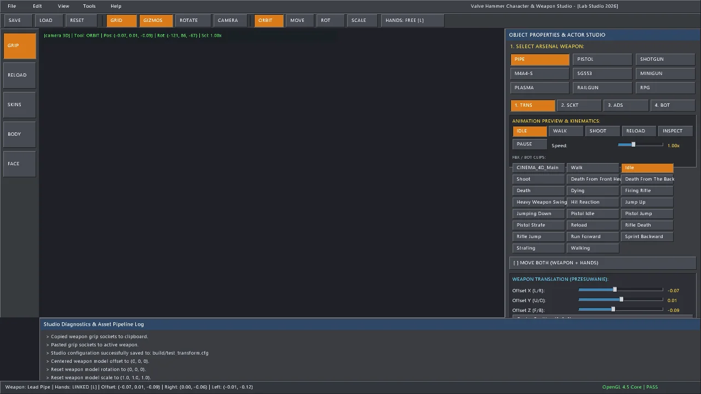
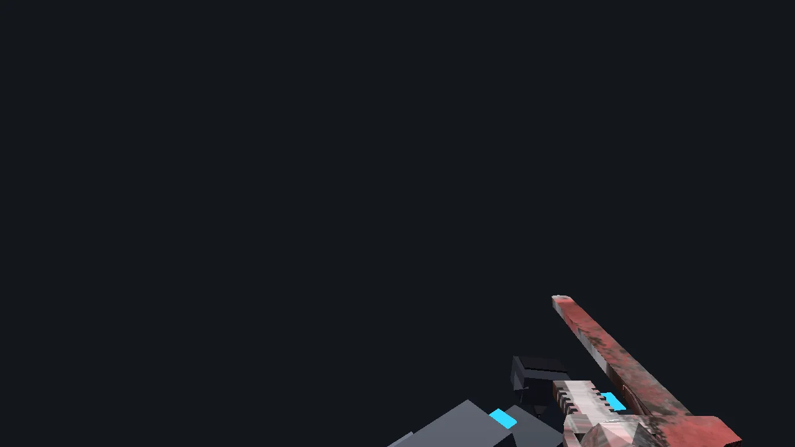
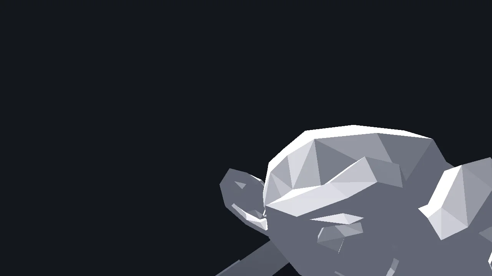
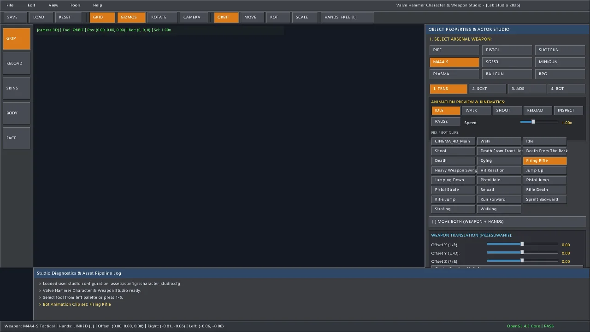

Valve Hammer Character & Weapon Studio [LabStudio.exe]
1. Studio Architecture & Rationale
In traditional game production, aligning first-person viewmodels, calibrating two-handed weapon grips, tuning aim-down-sights (ADS) camera offsets, and fitting third-person bot skeletal sockets is an arduous trial-and-error cycle of recompiling code or re-exporting 3D assets.
LabStudio (LabStudio.exe) is a specialized, zero-overhead standalone authoring suite built natively inside Lab Engine. Modeled after the iconic industrial aesthetic of Valve Hammer Editor, it allows technical artists and gameplay programmers to inspect, pose, animate, and customize all 9 tactical weapons and character rigs directly inside OpenGL 4.5+ with instant visual feedback and sub-millimeter precision.
assets/configs/character_studio.cfg. When launched, both the single-player campaign (Lab.exe), the level editor (LabHammer.exe), and multiplayer bots ingest this file automatically, guaranteeing 100% visual parity across all executables.
2. Valve Hammer UI, Gizmos & Diagnostics
The user interface of LabStudio is rendered using immediate-mode 2D and 3D primitives via LabRenderer and LabFont. It avoids heavyweight web views or bloated third-party GUI libraries, maintaining a blistering >1000 FPS rendering loop.

UI Anatomy
- Left Tool Palette: Quick-access buttons for
SAVE,LOAD,RESET,GRIDtoggle,GIZMOS,CAMERA RESET, and transform sub-mode selectors (MOVE,ROT,SCALE,HANDS-FREE). - Top Tab Bar: 5 major workflow editors:
GRIP,RELOAD,SKINS,BODY, andFACE. - Main 3D Viewport: Interactive orbit camera (Right-Mouse orbit, Middle-Mouse pan, Scroll wheel distance zoom) rendered over a CAD-style ground grid.
- Bottom Diagnostics Console: 8-line live scrolling log window displaying file operations, matrix evaluations, and socket transforms in real time.
- Modal Dropdowns: Classic Win32/Hammer menus (
File,Edit,View,Tools,Help) featuring full keyboard shortcuts, Undo/Redo history snapshots, and clipboard socket copying.
3. Tab 1: Weapon Grip Poser & Sub-Modes
The Grip Poser tab provides comprehensive spatial calibration for each of the 9 weapons across 4 distinct sub-modes:
| Sub-Mode | Target Transform | Primary Controls | Description |
|---|---|---|---|
| 1. WEAPON TRANSFORM | Viewmodel STL Mesh | Offset X/Y/Z, Pitch/Yaw/Roll, Scale X/Y/Z | Positions and orients the weapon mesh relative to the camera eye line. Supports independent translation without moving hands via lockHands. |
| 2. RIGHT HAND POSER | Socket bHandR |
Grip Pos X/Y/Z, Rot X/Y/Z, Finger Curls | Attaches the primary cybernetic viewmodel hand to the weapon grip, handle, or trigger guard. |
| 3. LEFT HAND POSER | Socket bHandL |
Grip Pos X/Y/Z, Rot X/Y/Z, Finger Curls | Calibrates the secondary support hand on handguards, forward grips, or forends. |
| 4. ADS ALIGNMENT | Camera Sightline Offset | Sight X/Y/Z, Eye Relief, Zoom FOV | Aligns iron sights, holographic reticles, or scope tubes directly onto the screen center during right-click aim. |
| 5. BOT SOCKET 3D | Third-Person Bot Hand | Socket Pos X/Y/Z, Rot X/Y/Z, Uniform Scale | Aligns the weapon model rigidly onto third-person combat bot humanoid armatures. |
Independent Weapon Translation (Lock Hands Feature)
A frequent issue in FPP weapon authoring is that adjusting the weapon's position inadvertently displaces already-posed viewmodel hands. LabStudio solves this with the Lock Hands (Move Weapon Only) toggle. When active (lockHands = true), transforming the weapon automatically computes an inverse counter-offset for the viewmodel arm sockets, allowing the gun to slide or angle freely while the hands remain anchored in space.

4. Third-Person Bot Weapon Sockets & Scaling
In third-person combat, bots must hold weapons rigidly in their right hand bone socket (mixamorig:RightHand). However, weapon models designed for first-person viewmodels are frequently modeled at radically different scales (e.g. M4A4-S in millimeters vs STL pipe in centimeters).
LabStudio features a dedicated BOT SOCKET sub-panel with real-time 3D preview:
// Bot Socket Attachment Matrix Evaluation
Mat4 Skeleton::getSocketTransform(int boneIndex,
const Mat4& modelTransform,
const std::vector<Mat4>& globalTransforms,
const Mat4& socketOffset) const {
if (boneIndex < 0 || boneIndex >= static_cast<int>(globalTransforms.size())) {
return modelTransform;
}
return modelTransform * globalTransforms[boneIndex] * socketOffset;
}The artist can adjust Socket Offset X/Y/Z, Socket Rotation Pitch/Yaw/Roll, and Uniform Bot Weapon Scale with instant visual rendering directly on the animated T-800 Terminator skeletal mesh.
5. Tab 2: Reload Timeline Choreography
The Reload Timeline tab provides sub-frame event choreography for tactical weapon reloads. Instead of static non-interactive animations, reloads are divided into 4 sequential keyframe markers:
- Mag Eject (0.0s ? 0.35s): Left hand drops to magazine well; audio cue
sound_mag_out.pcmfires; spent magazine falls away. - Mag Insert (0.35s ? 0.72s): Fresh magazine retrieved from tactical pouch and seated into receiver;
sound_mag_in.pcmtriggers; ammo count replenishes. - Slide Pull / Bolt Release (0.72s ? 1.05s): Hand racks charging handle or presses bolt release; chambering audio cue.
- Return to Ready (1.05s ? 1.30s): Hands resume standard two-handed firing grip; weapon enters ready state.
6. Tab 3: Custom STL Models & PBR Material Skins
Lab Engine features a native Binary & ASCII STL Loader (Mesh::loadSTL) and a universal texture decoder supporting high-resolution PNG, JPG, and BMP textures up to 4096×4096.

Through the Weapon Skins tab, developers can hot-swap external 3D STL files into any weapon slot and customize PBR surface parameters:
- Custom STL Path: Specify custom model filenames (e.g.
assets/models/Model.stlorpipe.stl). - Base Scale Normalization: Automatically detects STL vertex bounding box and normalizes millimeter or meter dimensions to standard viewmodel coordinates.
- PBR Texture Assignment: Bind custom diffuse/albedo maps (e.g.
weapon_m4a4s.bmp,hazard_stripes.bmp,metal_hull.bmp). - Material Sliders: Real-time control of Metallic (0.0 to 1.0), Roughness (0.0 to 1.0), UV Texture Tiling Scale (0.1x to 10.0x), and RGB Tint Color.
7. Tab 4: Character Appearance & Armor Classes
The Appearance tab enables customization of third-person player models and combat bots. Features include:
- Armor Classes:
Light Scout(streamlined composite plating, high mobility),Cryo Marine(heavy thermal insulated environmental suit), andTactical Officer(reinforced combat vest and utility rig). - Helmet Options:
Combat Visor(heads-up tactical HUD),Sealed Environmental Helmet(cryogenic respirator), andTactical Beanie(lightweight reconnaissance). - Camouflage Patterns: Procedurally shaded camouflage palettes including Urban Slate, Arctic White, Cryo Navy, and Hazard Rust.
8. Tab 5: Facial Blend Shapes & Real-Time Lip-Sync
The Face & Dialogue tab inspects procedural facial deformation and speech synchronization. The rig provides 6 discrete facial blend shapes:
// 6 Discrete Facial Blend Shapes evaluated in GPU VBO
enum class BlendShape : int {
Jaw_Open = 0, // Vowel phonemes: 'AA', 'AH', 'AW'
Brow_Raise = 1, // Combat stress and exclamation
Mouth_Smile = 2, // Non-combat morale stance
Mouth_O = 3, // Rounded vowel phonemes: 'OO', 'OH'
Eye_Blink_L = 4, // Autonomous micro-blink left
Eye_Blink_R = 5 // Autonomous micro-blink right
};The built-in speech track synthesizer generates procedural speech waveforms and runs real-time root-mean-square (RMS) energy tracking to evaluate phoneme intensity, driving the jaw and lip mesh deformations synchronously with dialogue audio.
9. 23-Clip FBX Skeletal Animation Palette
To test character posing and weapon socket stability during movement and combat, LabStudio incorporates a live Animation Switcher & FBX Clip Previewer.

The animation panel features:
- Playback Controls: Seamless
PLAY/PAUSEtoggle and dynamic speed slider (0.25× to 2.50×) allowing frame-by-frame inspection of recoil arcs and muzzle alignment. - 23 Selectable Clips: Responsive 3-column button grid automatically populated from all glTF and FBX clips in
assets/animations/(including Walking, Run Forward, Firing Rifle, Reload, Hit Reaction, Death From Front Headshot, Pistol Idle, Heavy Weapon Swing, and Jump Up). - Dual-Mode State Sync: Switching to Walk or Shoot activates both viewmodel weapon bobbing/recoil and the corresponding third-person bot skeletal animation simultaneously.
10. Config Serialization & Engine Hot-Reloading
When clicking SAVE CONFIG or pressing Ctrl + S, LabStudio serializes all weapon grips, bot sockets, skin paths, and appearance settings into an ASCII configuration file:
// assets/configs/character_studio.cfg sample excerpt
[Weapon_3_M4A4S]
offset = 0.024 -0.015 0.082
rotation = 1.200 -2.400 0.500
lock_hands = 0
right_grip_pos = 0.015 -0.045 0.010
right_grip_rot = 5.000 12.000 -2.000
left_grip_pos = -0.020 -0.025 0.220
left_grip_rot = 2.000 4.000 10.000
bot_socket_pos = 0.085 0.020 0.110
bot_socket_rot = -5.000 85.000 0.000
bot_socket_scale = 1.000
custom_model = assets/models/Model.stl
texture = weapon_m4a4s.bmp
metallic = 0.85
roughness = 0.35See Also
- glTF 2.0 & FBX Skeletal Animation Pipeline ? Mixamo humanoid retargeting and GPU skinning.
- Combat Bot AI ? Bot weapon arsenals, cadence, and human recoil arcs.
- Weapons & Viewmodel Kinematics ? Spring-damper sway and ADS mechanics.
- LabHammer 3D Level Editor ? CSG brush modeling and .labmap format.